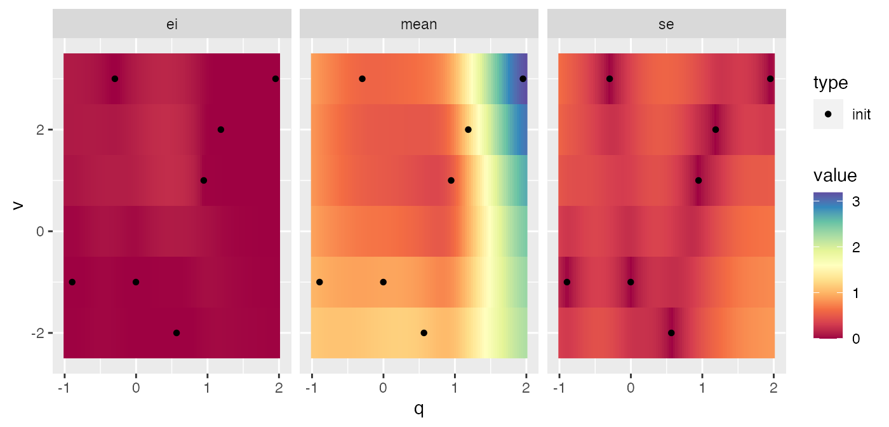
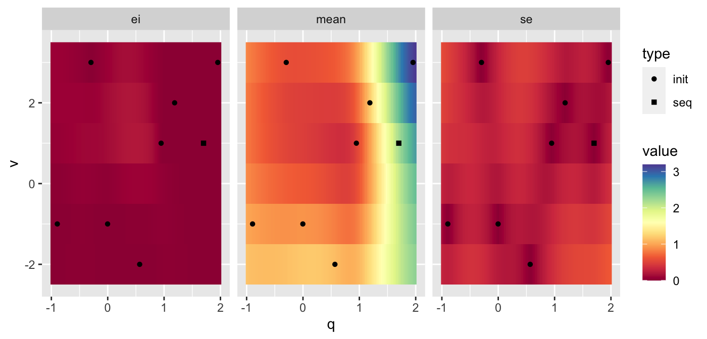

Human-in-the-loop MBO
Source:vignettes/supplementary/human_in_the_loop_MBO.Rmd
human_in_the_loop_MBO.RmdPurpose
This Vignette shows you how to use mlrMBO for a guided optimization. In this setting mlrMBO proposes a candidate configuration and you can then decide for yourself whether you want to evaluate it or another value. You have to evaluate the objective function manually. The value and the result have to be feed back to mlrMBO. Afterwards you can request the next candidate and so on.
Introduction
Before we start the optimization you need to define the search space:
ps = makeParamSet(
makeNumericParam("q", lower = -1, upper = 2),
makeIntegerParam("v", lower = -2, upper = 3)
)Furthermore we need an initial design that includes the results of the evaluated function
des = generateDesign(n = 7, par.set = ps)
des
## q v
## 1 1.186967721 2
## 2 -0.894533828 -1
## 3 -0.002319692 -1
## 4 1.952659707 3
## 5 -0.296925651 3
## 6 0.566731057 -2
## 7 0.947456868 1After evaluating the objective function manually we can add the results
des$y = c(1.20, 0.97, 0.91, 3.15, 0.58, 1.12, 0.50)Now we define our mlrMBO-Control object. For this example we stick to the defaults except that we set the infill-criterion to the Expected Improvement
ctrl = makeMBOControl()
ctrl = setMBOControlInfill(ctrl, crit = crit.ei)These information are enough to get us started and initialize the sequential MBO.
opt.state = initSMBO(par.set = ps, design = des, control = ctrl, minimize = TRUE, noisy = FALSE)At each state the opt.state object can be plotted to visualize the predictions of the surrogate model
plot(opt.state)
The first panel shows the value of the infill criterion. The higher the value the more this area is desirable to be explored to find the optimum. In the following panels the mean prediction of the surrogate and the uncertainty estimation is plotted.
Let’s see which point MBO suggests we should evaluate in the next step:
proposePoints(opt.state)
## $prop.points
## q v
## 893 0.409088 2
##
## $propose.time
## [1] 0.39
##
## $prop.type
## [1] "infill_ei"
##
## $crit.vals
## [,1]
## [1,] -0.2091309
##
## $crit.components
## se mean
## 1 0.5018957 0.4824381
##
## $errors.model
## [1] NA
##
## attr(,"class")
## [1] "Proposal" "list"We don’t have to stick to the suggestion and evaluate another point:
x = data.frame(q = 1.7, v = 1)After we evaluated the objective function manually we get a return value of 2.19. We take both values to update MBO:
updateSMBO(opt.state, x = x, y = 2.19)Now we can plot the state again and ask for a proposal:
plot(opt.state)
(prop = proposePoints(opt.state))
## $prop.points
## q v
## 785 0.4751879 1
##
## $propose.time
## [1] 0.327
##
## $prop.type
## [1] "infill_ei"
##
## $crit.vals
## [,1]
## [1,] -0.2040839
##
## $crit.components
## se mean
## 1 0.3466558 0.3838147
##
## $errors.model
## [1] NA
##
## attr(,"class")
## [1] "Proposal" "list"This time we evaluated the exact proposed points and get a value of 0.13.
updateSMBO(opt.state, x = prop$prop.points, y = 0.13)Let’s assume we want to stop here. To get to the usual MBO result you can call:
res = finalizeSMBO(opt.state)
res$x
## $q
## [1] 0.4751879
##
## $v
## [1] 1
res$y
## [1] 0.13Semi Automatic MBO
You can combine the human-in-the-loop MBO with a simple loop to let MBO run for a while and just interfere once in a while.
f = function(q, v) 1 + sin(q*5) + 0.1 * (q^2 + v^2)
for (i in 1:10) {
prop = proposePoints(opt.state)
x = dfRowsToList(df = prop$prop.points, par.set = ps)
y = do.call(f, x[[1]])
updateSMBO(opt.state, x = prop$prop.points, y = y)
}
proposePoints(opt.state)
## $prop.points
## q v
## 561 0.9091981 -1
##
## $propose.time
## [1] 0.332
##
## $prop.type
## [1] "infill_ei"
##
## $crit.vals
## [,1]
## [1,] -0.01464107
##
## $crit.components
## se mean
## 1 0.838553 1.571432
##
## $errors.model
## [1] NA
##
## attr(,"class")
## [1] "Proposal" "list"Continue a normal MBO Run
You can also continue a normal call of mbo() using this manual interface:
fun = makeAlpine02Function(1)
res = mbo(fun = fun, control = ctrl)
## Computing y column(s) for design. Not provided.
## [mbo] 0: x=4.71 : y = -2.17 : 0.0 secs : initdesign
## [mbo] 0: x=7.79 : y = 2.79 : 0.0 secs : initdesign
## [mbo] 0: x=6.77 : y = 1.22 : 0.0 secs : initdesign
## [mbo] 0: x=2.46 : y = 0.99 : 0.0 secs : initdesign
## [mbo] 1: x=8.32 : y = 2.58 : 0.0 secs : infill_ei
## [mbo] 2: x=10 : y = -1.72 : 0.0 secs : infill_ei
## [mbo] 3: x=8.02 : y = 2.79 : 0.0 secs : infill_ei
## [mbo] 4: x=0.435 : y = 0.278 : 0.0 secs : infill_ei
## [mbo] 5: x=7.9 : y = 2.81 : 0.0 secs : infill_ei
## [mbo] 6: x=7.53 : y = 2.6 : 0.0 secs : infill_ei
## [mbo] 7: x=7.95 : y = 2.81 : 0.0 secs : infill_ei
## [mbo] 8: x=7.87 : y = 2.8 : 0.0 secs : infill_ei
## [mbo] 9: x=7.92 : y = 2.81 : 0.0 secs : infill_ei
## [mbo] 10: x=7.91 : y = 2.81 : 0.0 secs : infill_ei
opt.state = res$final.opt.state
plot(opt.state, scale.panels = TRUE)
(prop = proposePoints(opt.state))
## $prop.points
## x
## 854 7.93318
##
## $propose.time
## [1] 0.279
##
## $prop.type
## [1] "infill_ei"
##
## $crit.vals
## [,1]
## [1,] -0.0001274342
##
## $crit.components
## se mean
## 1 0.0006771413 2.807764
##
## $errors.model
## [1] NA
##
## attr(,"class")
## [1] "Proposal" "list"
y = fun(prop$prop.points)
updateSMBO(opt.state, x = prop$prop.points, y = y)
# ...Proposal of multiple points
Using Multi-Point MBO you can also obtain multiple suggestions at each call of proposePoints().
ctrl = makeMBOControl(propose.points = 4)
ctrl = setMBOControlInfill(ctrl, crit = makeMBOInfillCritEI())
ctrl = setMBOControlMultiPoint(ctrl, method = "cl")
opt.state = initSMBO(par.set = ps, design = des, control = ctrl, minimize = TRUE, noisy = FALSE)
(prop = proposePoints(opt.state))
## $prop.points
## q v
## 953 0.40893348 2
## 519 -0.33497801 1
## 314 0.67636063 1
## 794 0.08087523 2
##
## $propose.time
## [1] 0.297 0.310 0.313 0.319
##
## $prop.type
## [1] "infill_ei" "infill_ei" "infill_ei" "infill_ei"
##
## $crit.vals
## [,1]
## [1,] -0.20913027
## [2,] -0.20284920
## [3,] -0.14291373
## [4,] -0.06647469
##
## $crit.components
## se mean
## 1 0.5019054 0.4824469
## 2 0.3274540 0.3745226
## 3 0.1159215 0.3639492
## 4 0.1672672 0.5005112
##
## $errors.model
## [1] NA NA NA NA
##
## attr(,"class")
## [1] "Proposal" "list"It’s also okay to just evaluate a subset of these points.
updateSMBO(opt.state, x = prop$prop.points[1:2,], y = list(2.28, 1.67))
# ...